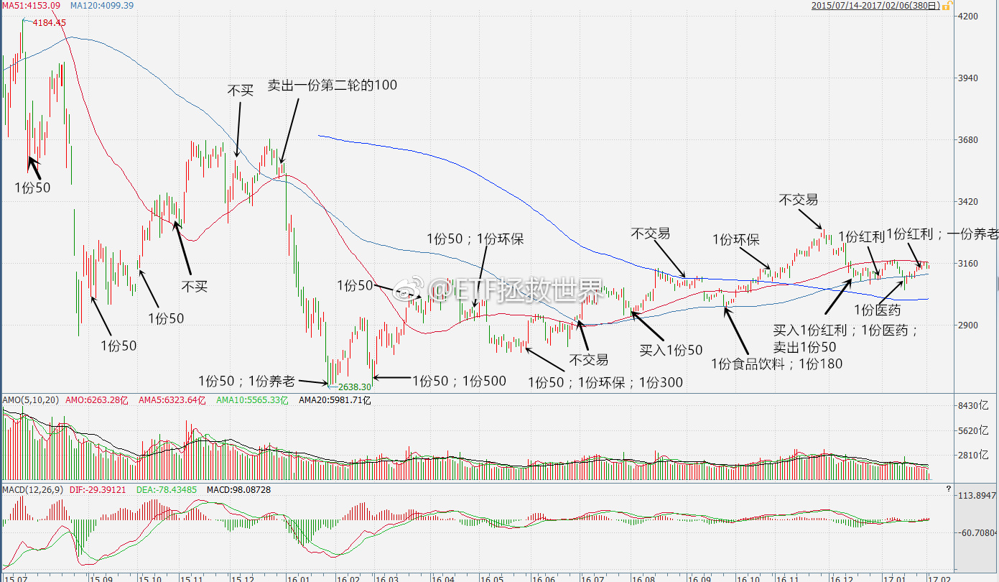

不让买我们就不买了。 //@ETF拯救世界:我自己都害怕了！不能每次都这么灵啊。好吧，这样，如果跌得够猛，下周加车…… //@ETF拯救世界:计划不开车就是这个结果。我也很无奈呀。@ETF拯救世界:“不买就跌”的魔咒又要应验了吗……不过这次应该不会跌。毕竟要开会…… 
回复@小狗上马路:不是。是择估值。举个例子吧。你太太想买个爱马仕的包，到商场一看，不打折，转身走了。第二天听说打折了，你贤惠的太太说，嗯，那就等折扣再高一点就去买一个。——你太太并没有在择时，而是择价值而已。 //@小狗上马路:E哥，这算择时么？虽然开车很高兴@ETF拯救世界:“不买就跌”的魔咒又要应验了吗……不过这次应该不会跌。毕竟要开会……
我自己都害怕了！不能每次都这么灵啊。好吧，这样，如果跌得够猛，下周加车…… //@ETF拯救世界:计划不开车就是这个结果。我也很无奈呀。@ETF拯救世界:“不买就跌”的魔咒又要应验了吗……不过这次应该不会跌。毕竟要开会……